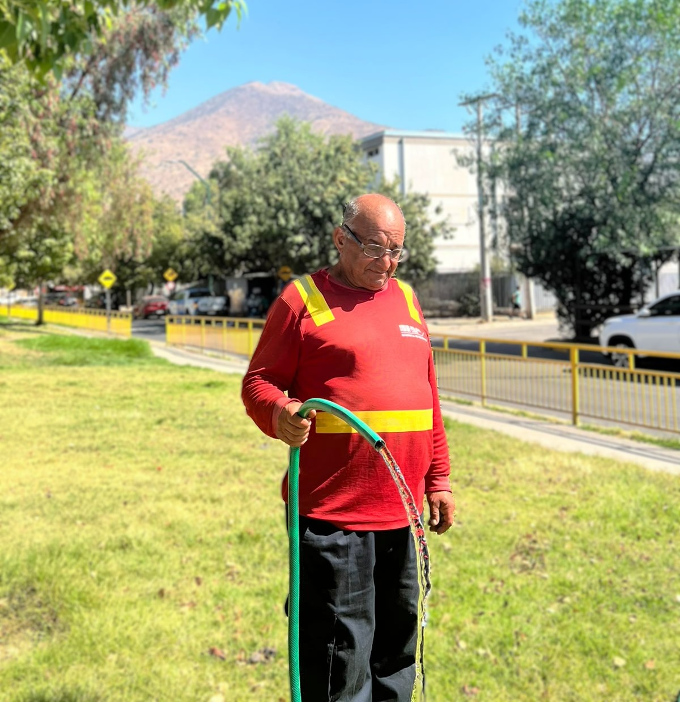
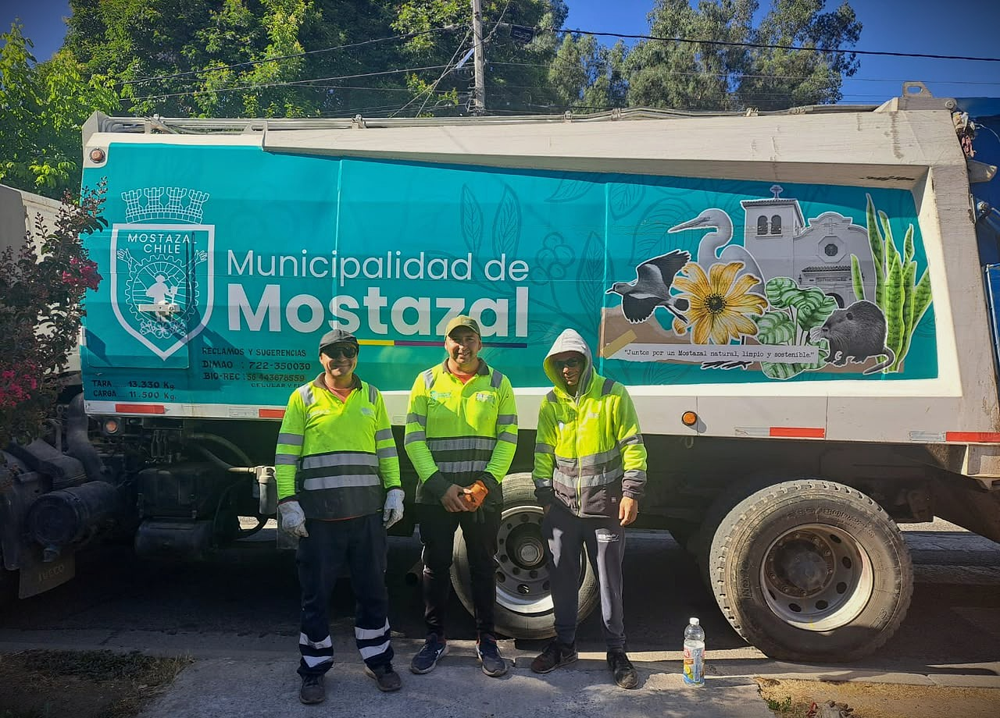
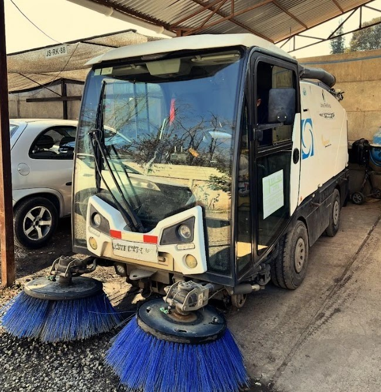
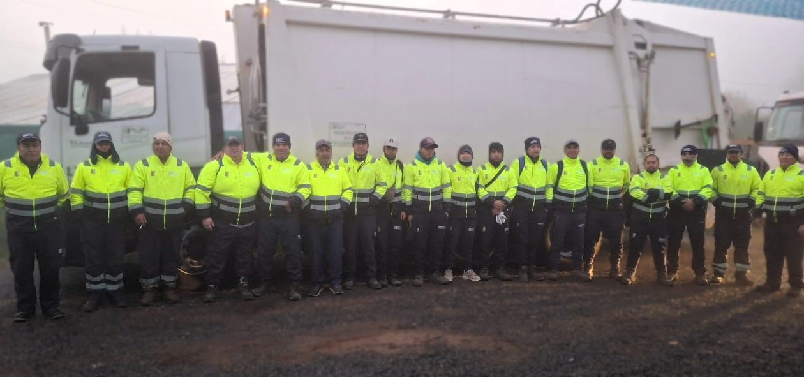
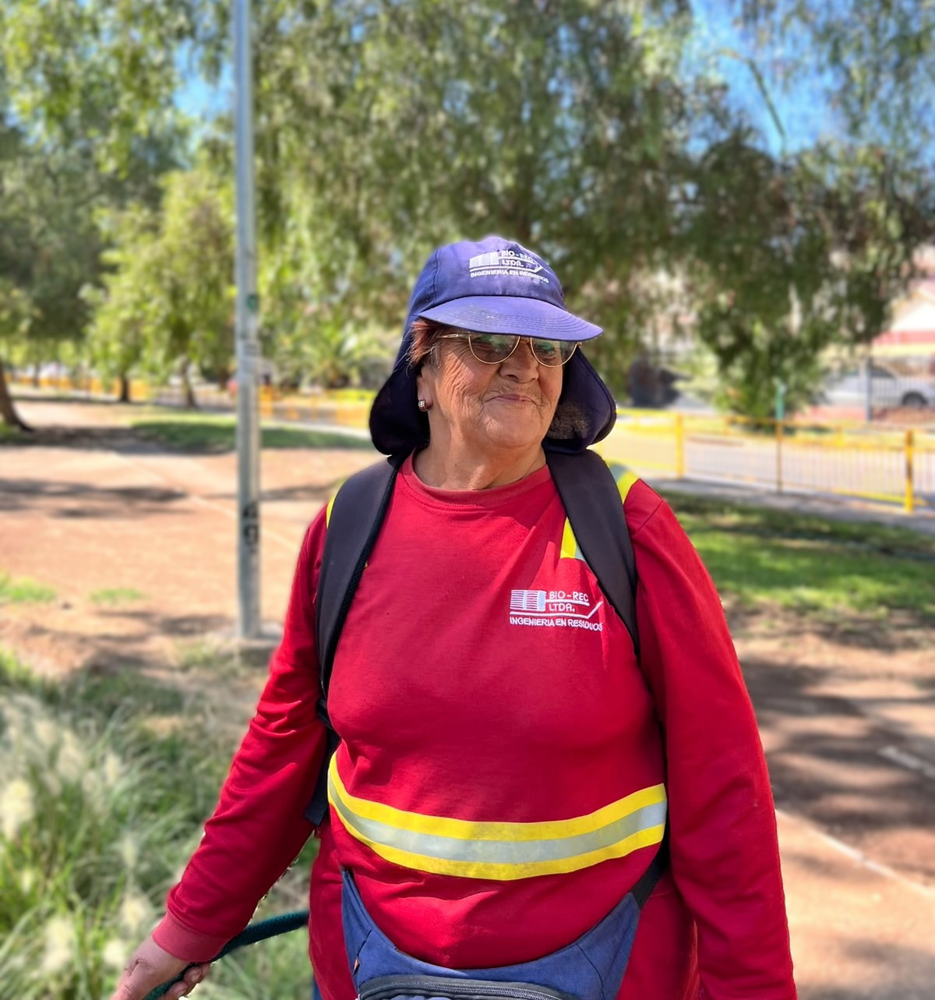
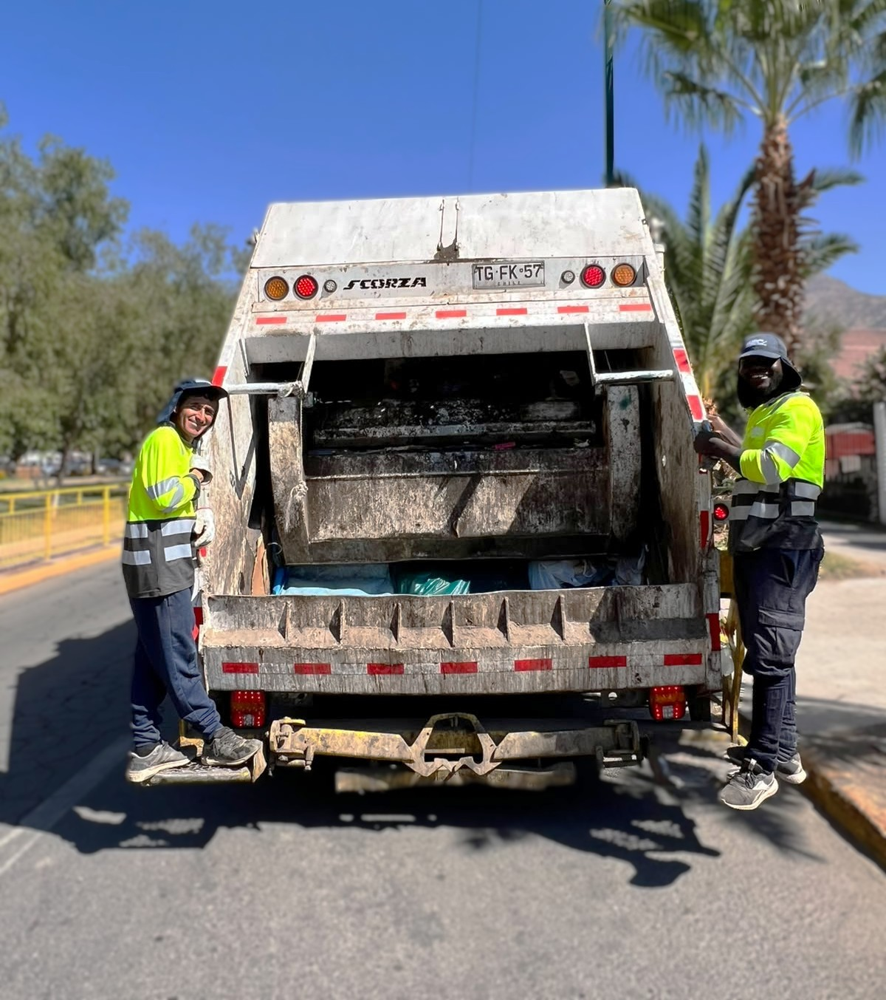
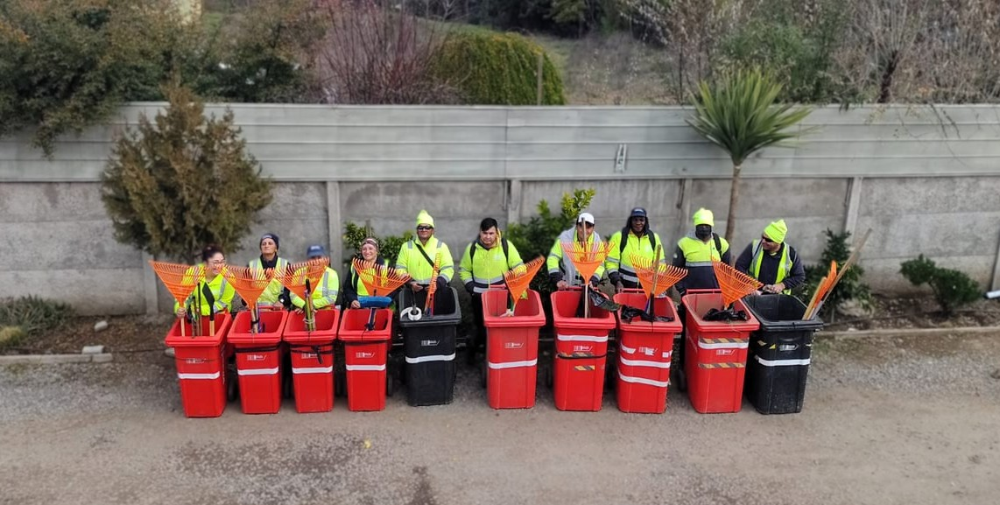
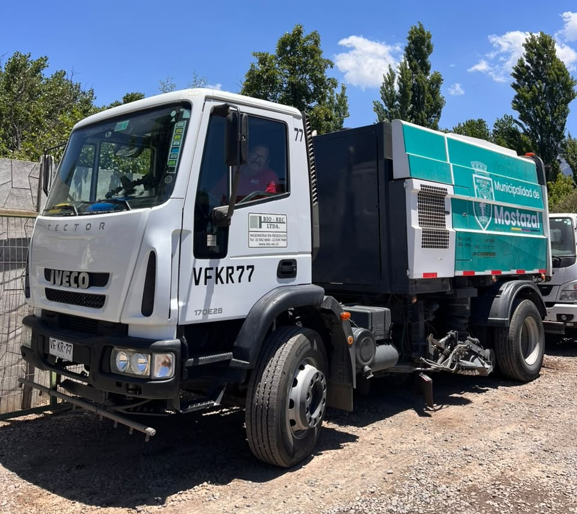

Recolección
Residuos no peligrosos
Servicio domiciliario, municipal y empresarial con camiones recolectores y procesos de operación continua.
Gestión responsable de residuos
En BIO-REC LTDA desarrollamos servicios de extracción y manejo de residuos domiciliarios y empresariales con foco en seguridad, continuidad operativa y cuidado del entorno.

Servicios
Trabajamos con hogares, municipalidades, condominios y empresas privadas, siempre con foco en continuidad operativa, manejo responsable y cumplimiento de contratos.
Servicio domiciliario, municipal y empresarial con camiones recolectores y procesos de operación continua.

Cuidado de espacios públicos y privados, riego, poda, limpieza y mantención planificada durante todo el año.

Apoyo operativo para municipalidades, condominios e instituciones que requieren cumplimiento, orden y trazabilidad.

Barredoras, maquinaria y equipos en terreno para apoyar limpieza urbana, ferias libres y necesidades puntuales.
Municipalidades
A lo largo de nuestra historia hemos cumplido de manera óptima los contratos comprometidos con distintas comunas.
Maquinaria y productos
Nuestra maquinaria permite la recolección y manejo de residuos de manera eficiente y ecológica.
Contenedores HDPE robustos y de gran duración para manejar residuos de forma ordenada.
Soluciones metálicas resistentes para operaciones que requieren mayor capacidad de acopio.
Mantención áreas verdes
Embellecemos y cuidamos áreas verdes para que se mantengan limpias, saludables y funcionales durante todo el año.
ContáctanosInspección del terreno y plan de mantención personalizado según vegetación, clima y uso del espacio.
Corte de césped, poda de árboles y arbustos, riego eficiente y fertilización para crecimiento saludable.
Diseño paisajístico, plantación de flores y arbustos, senderos, fuentes y mobiliario de jardín.
Uso de técnicas sostenibles, selección de plantas nativas, riego eficiente y promoción de biodiversidad.
Comunicación permanente, revisiones regulares y ajustes del plan para mantener el espacio en óptimas condiciones.
Mejora de calidad de vida, mayor valor estético y económico, y compromiso ambiental visible.
Nosotros
Desde nuestros inicios en 1989, BIO-REC ha sido una empresa familiar dedicada al cuidado de áreas verdes y apoyo a la recolección de residuos en la comuna de Lampa.
En 1993 nos constituimos formalmente como BIO-REC Limitada, consolidando nuestros servicios iniciales en Lampa, Independencia y Curacaví. Con los años hemos ampliado nuestra operación a recolección de basura, mantención de áreas verdes, levante, barrido y lavado de ferias libres y microbasurales.



Proporcionar soluciones integrales y eficientes en la recolección de residuos no peligrosos y el mantenimiento de áreas verdes, contribuyendo a un entorno más limpio, seguro y sostenible.
Ser parte importante del mercado de la recolección de residuos no peligrosos y la mantención de áreas verdes, destacándonos por eficiencia, compromiso y excelencia operativa.
Entregamos soluciones personalizadas para empresas, instituciones y hogares, adaptándonos a las necesidades de cada operación.
Presencia actual
Destacamos las zonas donde BIO-REC mantiene presencia operativa actual en recolección, contratos particulares y servicios asociados.

Operación en terreno
Una muestra breve de la operación BIO-REC en distintas labores, manteniendo el foco en confianza, presencia y capacidad de respuesta.



Contacto
Complete el formulario y deje sus datos para que podamos revisar su solicitud. Por ahora, el envío queda preparado visualmente para la siguiente etapa del proyecto.